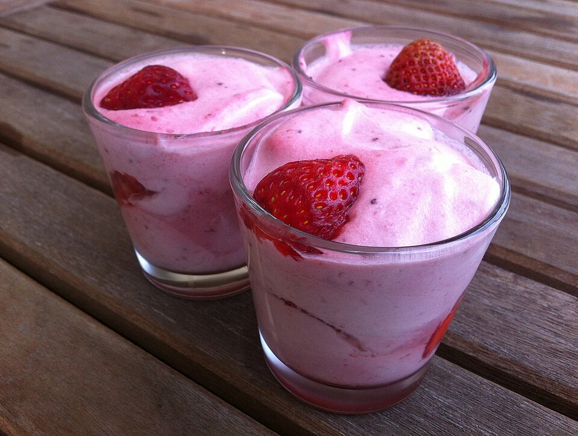

Doces · Musses
Musse de morango

Ingredientes
- 1 caixa de gelatina em pó sabor morango
- ½ xícara (chá) de água quente
- 1 xícara (chá) de morango picado
- 1 lata de creme de leite gelado sem soro
- 150 g de cream cheese
- 2 claras
- 2 colheres (sopa) de açúcar
- ½ pacote de biscoito champanhe quebrado (90 g)
- 6 morangos para decorar
- Calda: ½ xícara (chá) de geleia de morango + 2 colheres (sopa) de água
Modo de preparo
- Dissolva a gelatina na água quente e bata com os morangos, o creme de leite e o cream cheese.
- Bata as claras em neve com o açúcar até suspiro e misture ao creme.
- Forre as taças com os biscoitos, cubra com o creme e gele 4 horas. Cozinhe a geleia com a água 3 minutos, esfrie, espalhe e decore com morangos.